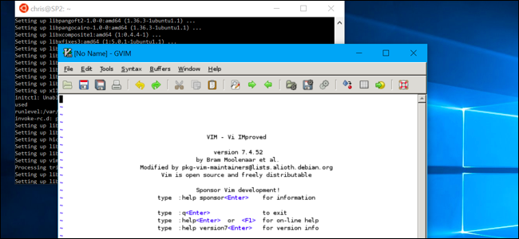
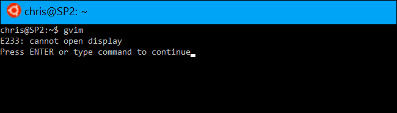
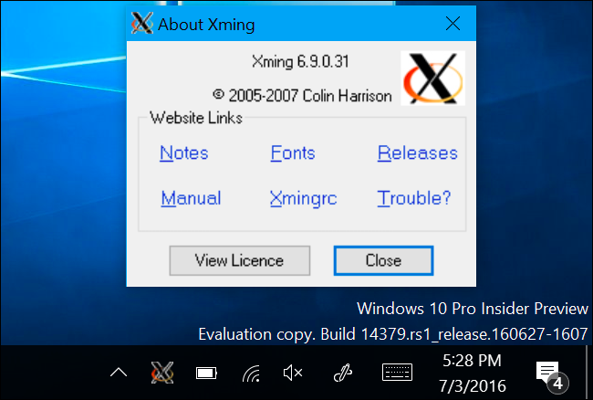
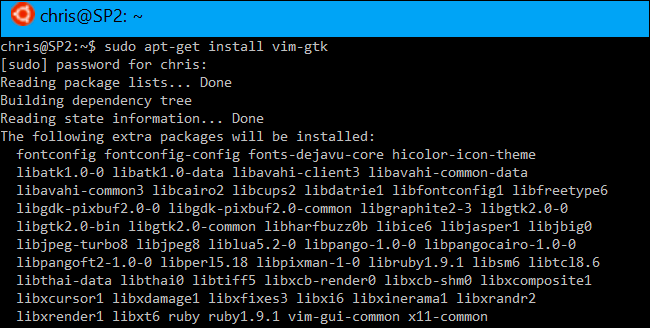
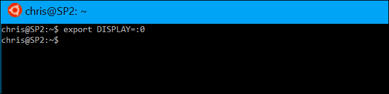
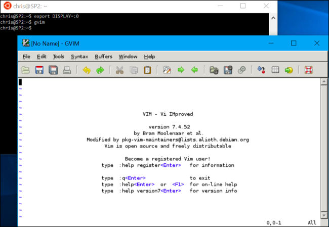

How-To Geek
How to Run Graphical Linux Desktop Applications from Windows 10’s Bash Shell

Windows 10’s Bash shell doesn’t officially support graphical Linux desktop applications. Microsoft says this feature is designed only for developers who want to run Linux terminal utilities. But the underlying “Windows Subsystem for Linux” is more powerful than Microsoft lets on.
It is possible to run graphical Linux applications in Windows 10, but bear in mind that it isn’t officially supported. Not every piece of Linux software works, and graphical applications are even more complex and less tested. But these should become more stable over time as Microsoft improves the underlying Windows Subsystem for Linux.
Windows 10’s Bash shell only supports 64-bit binaries, so you can’t install and run 32-bit Linux software.
![]()
How This Works
First, let’s run down exactly how this works so you can have some understanding of what we’re doing here.
Windows 10 includes an underlying “Windows Subsystem for Linux” that allows Windows 10 to run Linux software by translating Linux system calls to Windows system calls.
When you run the bash.exe program, it downloads and installs a complete Ubuntu user space image on your computer. This includes the exact same binaries–or applications–that would run on Ubuntu. That “Bash on Ubuntu on Windows” environment works thanks to the underlying Windows Subsystem for Linux.
Microsoft doesn’t want to spend any time working on graphical software, as this feature is intended for command-line developer tools. But the main technical reason that graphical applications aren’t supported is that they require an “X server” to provide that graphical interface. On a typical Linux desktop, that “X server” automatically appears when you boot your computer and it renders the entire desktop and the applications you use.
But try opening a graphical application from Bash on Windows, though, and it will complain that it can’t open a display.

There are X server applications you can install on a Windows desktop, however. Typically, these are used to render Linux applications running on other computers–the “X11” protocol is rather old and was designed with the ability run over a network connection.
If you install an X server application on your Windows desktop and change a setting in the Bash shell, applications will send their graphical output to the X server application and they’ll appear on your Windows desktop. Everything should work fine, assuming those applications don’t depend on Linux system calls that the Windows Subsystem for Linux doesn’t yet support.
Step One: Install an X Server
There are several different X servers you could install on Windows, but we recommend Xming. Download it and install it on your Windows 10 PC.
The installation process is simple: You can just accept the default settings. It will then automatically launch and run in your system tray, waiting for you to run graphical programs.

Step Two: Install the Program
You can install graphical Linux desktop programs like you can any other program, using the apt-get command in the Ubuntu-based Bash environment. For example, let’s say you’d want to install the graphical, GTK-based vim editor. You’d run the following command in the Bash window:
sudo apt-get install vim-gtk

It will go through the installation process in the command line window, just like it does on Ubuntu.
Step Three: Set Your Display Environment Variable
Now, you’ll need to set the “DISPLAY” environment variable to point at the X server running on your Windows 10 PC. If you don’t do this, graphical applications will simply fail to launch.
To do this, run the following command in the Bash environment:
export DISPLAY=:0
This setting only applies to your current Bash session. If you close the window, Bash will forget it. You’ll have to run this command each time you reopen Bash and want to run a graphical application.

Step Four: Launch an Application
You can now just launch a graphical application by typing the name of its executable, like you’d type any other command. For example, to launch vim-gtk, you’d run:
gvim
It’s that simple. If the application crashes after launching, the Linux system calls it requires may not be supported by the Windows Subsystem for Linux. There’s not much you can do about this. But give it a shot, and you may find that the apps you need work decently well!

You can also combine the third and fourth steps, if you like. Rather than exporting the DISPLAY variable once for an entire Bash shell session, you’d just run a graphical application with the following command:
DISPLAY=:0 command
For example, to launch gvim, you’d run:
DISPLAY=:0 gvim
Remember, this isn’t officially supported, so you may run into errors with more complex applications. A virtual machine is a more reliable solution for running many graphical Linux desktop applications on Windows 10, but this is a neat solution for some of the simpler stuff.
![]()
![]()
![]()
![]()
![]()
![]()
![]()
![]()

If you don't want to run the export DISPLAY=:0 each time you open a bash shell, open .bashrc in a text editor. Examples of ways to open a text editor with .bashrc:
nano ~/.bashrc gedit ~/.bashrcThen, add export DISPLAY=:0 to the end of the file. The .bashrc file is like the autorun file in Microsoft Windows. It gets executed every time a new Bash window is opened.
Interesting... for total propeller heads. What rare graphics app might Linux have that it not available on Windows?
Sometimes I get nostalgic and run an Amiga emu on my Windows. Out of curiosity I have installed many different LInux distros on a VM. I get the desire to push your hardware and stretch what you can run. Never could get a Mac emu to work [except back in the day when the Amiga could multitask and run IBM DOS and Mac OS at the same time! There was a special card made to do that so we didn't have to have Photoshop envy..!]
I'm glad Linux is out there 'cuz I also use TAILS, but honestly, it is NOT a very friendly OS.
Honestly, the only things I can think of involve a couple of cloud storage servers.
But it's not really about running Linux-only apps, anyway. It's about being able to run Linux development tools on a Windows worksation. That's the market Microsoft is trying to capture: the people developing for Linux servers.
By allowing Windows to run Linux software, we can develop Windows and *nix software on the same box without the need for virtual machines or dual-booting. Obviously, full integration testing and compatibility testing would still require Linux machines (at least half a dozen), but that part is pretty much unavoidable.
Using a similar method, you can also get Ubuntu's Unity environment on Windows 10.http://winaero.com/blog/run-ubuntu-unity-on-windows-10/